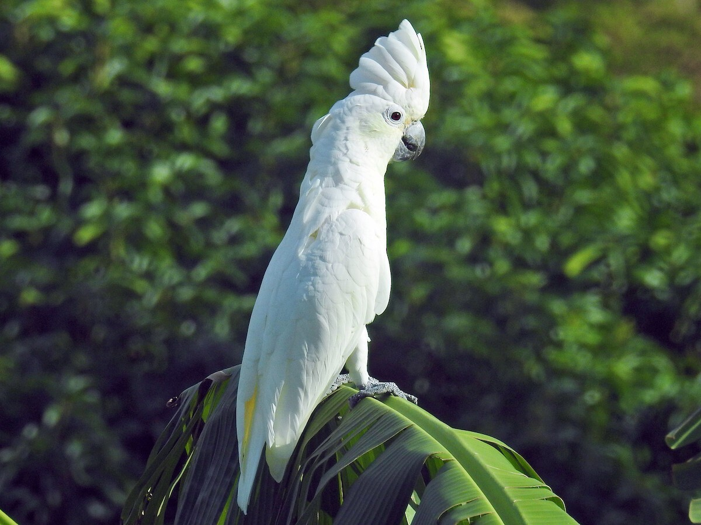
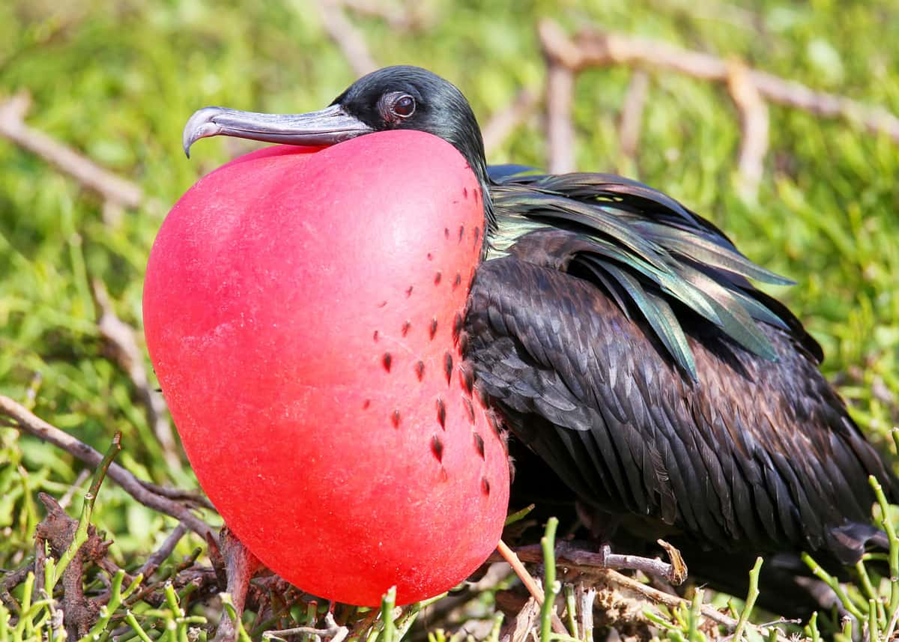

Cockatoos, in my opinion, are one of the most cutest birds in this world. You can search up "Cockatoo cute compilations" on YouTube and you would find rows and rows of them. There are as many videos
on them as there are crustacean(🦀) memes on the internet! Anyways, as you might be able to see, they look very similar to parrots. However, they are able to distinguish themselves from their pirate brethren. They are questionable pets because
even though they are quite friendly, they are hard to take care of. How hard are cockatoos to take care of? Should you get a cockatoo as your companion? In this article, you will find the answer to those questions.

One of the weirder birds on this planet is the magnificent frigatebird, or more commmonly known as the frigatebird. It is quite eccentric from its other feathery brethren. You might be able to notice the red puff under the frigatebird's beak. This is its cheekpouch and normally deflates when in flight. It is also considered a seabird, but surprisingly cannot go into water. Wanna know why it can 't? Do you want to know the function of that weird
cheekpouch? Well, you will figure all of that out after reading this article.

One of the most recognized traits of a bird is that they can fly. However, some birds are not able to soar the skies. One of these "flight-less " birds is the emu. Standing at a towering height of
5ft (just like you!), it is considered the second-tallest bird in the world! That is quite an impressive feat, I would say. However, despite this achievement, it doesn't look very unique. Unlike
the colorful peacock or the graceful flamingo, this scrappy fellow doesn 't look special at all. However, that is a wrong assumption. While its colors aren't vibrant or its feathers aren 't anything special, it has its unique properties that
allows them to distinguish themselves from their fellow birds. Do you want to find out? Read the article to learn about the hidden grace of the emu.